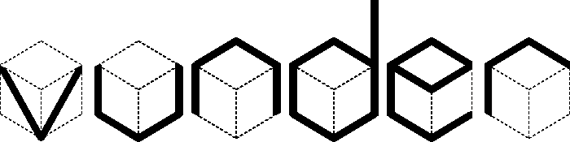
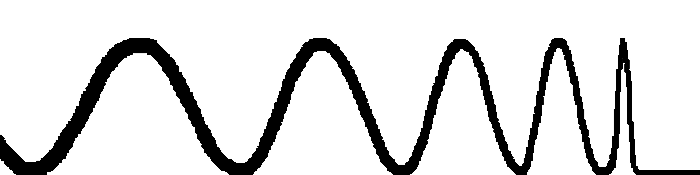

Research
SAIC Moscow hosts two research labs:
Visual Understanding Lab

#scene_understanding
#scene_reconstruction
#semantic_mapping
#shape_reconstruction
#3d_object_detection
Multimedia Lab

#object_recognition
#2d_object_detection
#image_harmonization
#image_manipulation
#generative_models
Head of SAIC Moscow
Professor Anton Konushin. See his personal website for contact info.
Address
Floor 25 Lesnaya Street
Moscow 125124
Russia
Join Us
Samsung AI Center Moscow is always looking for outstanding prospective researchers and engineers.
If you are interested in joining us, please apply for admission to the Samsung AI Center Moscow. Indicate in your application which Lab you are interested in working with.